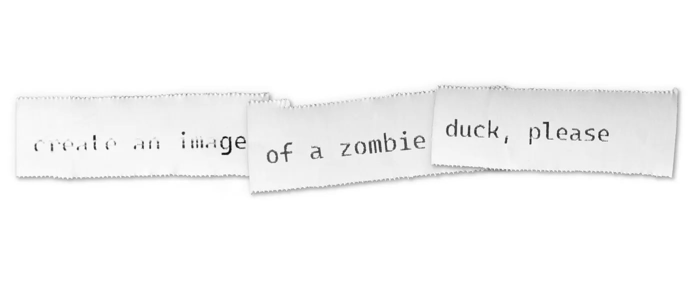

Think your Notion databases ahead
I was introduced to Notion a few years ago, by that time we were just
using it as a simple Wiki: some online pages with text and images.
Impressive wasn’t at all the word to describe it. Then, a few months
later, amidst a team restructure, something clicked on me:
You can’t break Notion (unless you really try).
Notion is the perfect tool to lose yourself and experiment different
types of organization. There’s tables, databases, you can embed other
platforms on it, you can upload lossless images and videos, apply
searching filters, rules and automations. And the best of all: Real time
collaboration.
In a matter of months, our Notion use grew like crazy.
Fast forward a few months, and I start to realize that my team was
fighting an organizational issue that I could solve. Here’s the thing:
We had three main, separated databases, all with their own Kanban boards
and tickets.

Because these boards were all created at different times, by various
people, they didn’t looked the same. In a way, these boards evolved with
us, and you could tell that by the way that each one was constructed.
This meant, for example, that there were several properties with
equivalent meaning that had different name structures, and when you’re
scaling, that’s a truly bad idea.
Another issue was the existence of duplicate tickets. A Sale Campaign
action will very probably also be a Social Media action, and if it meant
preparing some assets for printing, it would also be a Tasks action.
Only on very rare occasions we had tickets spanning the three databases,
but it was very common to have duplicates between Sales and Socials, as
they are practically the same.
Duplicates also meant that there was two (and sometimes three)
communication routes. A ticket could have the status “waiting for
approval” while the other equivalent ticket would have “approved, post
within three days”.
This happens because the databases were not synced. But they could be.
AI Generated Image of former US President Donald Trump used to deceive
minorities into voting on his favor, from BBC
An option to solve this could be merging databases, it’s something that
Notion allows users to do, but given that we have mismatching
properties, the amount of work that it would require made me decide
against it. For reference, doing this would mean: open ticket, check all
data, get every property right, delete obsolete properties, repeat. And
it wouldn’t even tackle the duplicates issue, as it would import all the
tickets to the same database, and the user would need to add “choose
which duplicate ticket to delete” to the already exhausting list of
tasks.
Taking this into consideration, I decided to go the manual way. Create a
new database and one by one import all the tickets, sounds slow right?
Keep reading and you’ll find out why it worked better than the
alternative.
First, we have to decide what properties will be needed. This is not
only an exercise of future-proofing your system, but also a work of
nomenclature and classes (no, not those classes, Karl).
So, for properties, here’s what I decided:
Status: The current status of the ticket topic (Backlog, To Do, In
Progress, Review, On Hold, Complete, Canceled);
Captain: The main face of the ticket, usually the person to contact in case
of any doubts;
People: As more than one person can be simultaneously working on the same
task, here is where you tag everyone;
Date: The relevant date of each topic (for social media tickets, this
would be the post date, for tasks, the day in which each task should
be performed);
Priority: The level of importance of each task (None, Low, Mid, High,
Urgent);
Media Channel: Where will it be published (Website, Instagram, LinkedIn, Medium,
Youtube);
Tags: To make search for archived tickets easier (for example “Client
Events” or “Tech Reviews”);
Databases: The thing that makes all of this works, check below why it is so
important